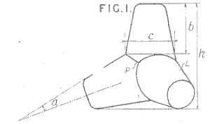

Brütalizm 1950'lerin sonlarında ve 1960'larda popülerlik kazanmış eski geleneklerden tamamen farklı bir mimari akımdır. 19. yüzyılın sonlarına gelindiğinde, sanayi devrimi sonrasında oluşan teknolojik gelişmeler, dünya savaşının getirdiği ekonomik çöküntüler ve mali sıkıntılar mimari tasarımda şeffaflığı, tasarrufu, ham malzeme kullanımını ve sadeliği ön plana çıkarmıştır.
Bu akımın ana karakteristikleri; çeşitli mimari unsurların (örneğin pencereler) tekrarlanması, taşıyıcı görev görmeyen dekoratif unsurların kullanılmaması, ve cephelerde brüt betona bol miktarda yer verilmesidir. Bunun yanı sıra bazı brütalist yapılarda kullanılan çelik, ahşap veya cam gibi malzemelerde de herhangi bir örtücü malzeme kullanılmamaktadır.
Geisel Kütüphanesi, California Üniversitesi, Amerika Birleşik Devletleri, 1970
Brütalizm, II. Dünya Savaşı'ndan sonra inşaat ihtiyacı ile tüm dünyada, özellikle de yeni bir sosyalist mimari yaratmak için kullanıldığı Birleşik Krallık ve Doğu Avrupa komünist ülkelerinde yaygınlaşmaya başlamıştır. Yapılar sek beton görünümüyle otoriter, politik bir hava oluşturduğundan siyasi gücünü ortaya koymak isteyen devletler genelde şehirleşmede ve kamusal alanlarda brütalist mimariye önem vermişlerdir.
Cité Radieuse, Fransa
İşlevsel betonarme kullanımı ve faydacılığı ile tanınan Brütalist mimari, öncelikle kurumsal binalar için kullanılmış daha sonralarda ise kritik konut ihtiyacını rasyonel bir şekilde ele almak için önemli konutlarda da Brütalist anlayış kullanılmıştır.
Özellikle İsviçreli-Fransız mimar Le Corbusier'in beton sevgisinin Brütalizm'i başlatmış olabileceğine inanılıyordu. İşlerinden biri olan Fransa, Marsilya'da bulunan Cité Radieuse (Parlak Şehir), tartışmasız tüm zamanların en etkili Brütalist binasıdır ve Le Corbusier'in en ünlü ve başarılı eserlerinden biri olarak kabul edilir. 1952'de tamamlanan ve işçi sınıfı için konut olarak oluşturulan Le Corbusier'in tasarımı, modüler dairelere uygun dev bir betonarme çerçeve gerektiriyordu. 1.600 kişiye kadar kapasiteli bu konut kompleksi, büyük ölçüde dekoratif unsurlardan yoksundu ve gelecekteki Brütalist projelerin çerçevesini oluşturacaktı.
Eastwich High School ve Pepper Middle School, Pensilvanya , Amerika Birleşik Devletleri
Fakat 1950 ve 1970'ler arasında yıldızı parlayan bu mimari akım 1980'lere girerken yavaş yavaş gözden düşmeye başlamıştı. Bunun bir sebebi, genellikle totaliterlik ile ilişkilendirilen mimarinin soğuk ve sade doğasından kaynaklanıyordu. Bunun yanı sıra inşaatta kullanılan ham betonun iyi yaşlanmaması ve genellikle genel estetiği bozan su hasarı ve çürüme belirtileri göstermesi yapıyı bozuyordu. Bu sebeplerle terkedilmiş Brütalist binalar artık grafiti sanatçıları tarafından kullanılan boş bir tuval görevi görmeye başlamıştı. İngiliz yazar Anthony Daniels, Brütalizmin betonarmesini "canavarca" olarak nitelendirdi ve "zarif yaşlanmadığını, bunun yerine parçalandığını, lekelendiğini ve çürüdüğünü" belirtmişti.
Hatta Alison ve Peter Smithson'ın Doğu Londra'da 1972'de tamamlanan Robin Hood Gardens konut projesi ve Owen Luder tarafından tasarlan İngiltere, Gateshead'deki yedi katlı Trinity Square Otoparkı bazı sebepler gerekçe gösterilerek yıkılmıştır. Londra'daki V&A (Victoria&Albert) Müzesi tarafından yıkım alanından kurtarılan Robin Hood Gardens toplu konutunun bir parçası ise İtalya'ya taşınarak 2018 yılında Venedik Mimarlık Bienali'nde sergilenmiştir.
Robin Hood Gardens Konut Projesi, Londra, İngiltere
Trinity Square Otoparkı, İngiltere
Luder mimarı olduğu Trinity Otaparkı için "Bir eşimi kaybettim, bir oğlumu kaybettim - bu çok acı. Bu sadece üzücü, çok üzücü, özellikle de yıkılması gerekmediği için. İstediklerini elde edebilirler ama onu koruyabilirdik."
Günümüze yaklaşırken 2000'li yıllarda, Brutalist binalar sık sık eleştirilere konu olmuştur. Örneğin Boston Belediye Binası, 2008'de gerçekleştirilen bir ankette "dünyanın en çirkin binası" seçilmiştir.
80'lerde tarzın modası geçtiğinden beri sayısız Brütalist bina yıkıldı. Bazıları onları göz kamaştırıcı olarak görürken bazıları yıkımlarının hem tarihin bir parçası olduğunu hem de güzel bir mimariyi kaybetmek olduğuna inanıyordu. Yine de Brütalizm'in birçok örneği, özellikle Londra'da ve önemli Amerika ve Kanada şehirlerinde, dünya genelinde hala bulunabilir.
Günümüzde yeni Brütalist projeler, belirgin anıtsal beton hacimlerle inşa ediliyor; ancak canlanma genellikle “Yeni Brütalizm” olarak adlandırılıyor. Hiç kimse Brütalizm nasıl tekrar moda haline geldi tam olarak bilmiyor ama Brad Dunning'in ilginç bir teorisi var:
“Brütalizm yalın ve tehditkar, mimarlık tekno müziğidir. Brütalist binaların bakımı pahalı ve yıkılması zordur. Kolayca yeniden şekillendirilemezler veya değiştirilemezler; bu nedenle mimarın amaçladığı şekilde kalma eğilimindedirler. Belki de hareket, kaotik ve parçalanan dünyamızda kalıcılık özellikle çekici olduğu için geri döndü.”
Boston Belediye Binası, Amerika Birleşik Devletleri
'Concrete' Koltuk, Jonas Bohlin, 1981
Stefan Zwicky tarafından tasarlanan Corbu'nun ikonik koltuğunun beton ve çelik ile yeniden yorumu. MichaeI Van Vliet'ten Beton Le Corbusier Sandalye
Avustralyalı tasarımcı Alexander Lotersztain'in beton markası Ivanka için tasarladığı serisi. Betonun mimari niteliklerini keşfetmek için tasarlanan bu koltuklar, kuvarsın doğal olarak oluşan formlarına ve kristalleşme sürecine dayanan yönlü şekillere sahiptir.
Kaliforniyalı tasarımcılar Thomas Musca ve Duyi Han, Rockito adlı bu sallanan sandalyeyi yaratmak için ahşap bir kalıba cam elyaf takviyeli beton döktüler. Koltuk, brütalist mimari tarzı temel alan açılara ve geometrik boşluklara sahip beton mobilya serisinin bir parçasını oluşturuyor.
Tejo Remy & René Veenhuizen'in Beton Sandalyesi şişirilmiş gibi görünse de, aslında plastik kaplamanın içine dökülmüş ve çelik çubuklar ve metal liflerle güçlendirilmiş betondan yapılmıştır.
1950'de, iki Fransız mühendis, Pierre Danel ve Paul Anglès d'Auriac, su altı duvarlarda kullanılmak üzere önerdikleri, birbirine kenetlenen, dört ayaklı beton bir şekil olan tetrapod'u geliştirdi ve patentini aldı.
{{}}
Yarım yüzyıldan fazla bir süre sonra, Furnitury adlı Hong Kong merkezli bir şirket, Tetra Sabun ürünleri için aynı formu kullandı. Bunun nedeni ürettikleri sabunun fazla kaygan olmasıydı. Sabunların dört ayaklı şekli, pentadactyl uzuvlarımızla mükemmel bir şekilde birbirine kenetlenir ve kavrama kolaylığı sağlar.
Brütalist hareketten yola çıkarak tasarlanan ve Londra'nın en dikkate değer mimarilerini oyununa piyon etmiş bu Skyline Satranç Seti, Brütalist mimarinin güçlü örnekleri olan; Trellick Tower, Petty France, Centrepoint ve Cromwell Tower gibi yapılardan oluşuyor.
Brütalizm'in iyi kötü bütün özellikleri onu seven ve nefret eden insanlardan oluşan iki farklı kutup yaratmış olsa da, bundan yıllar önce nasılsa günümüzde de mimarlar ve tasarımcılar bu akıma yeni renkler ve sesler getirmeye devam ediyor. Ama biz mekanları güzelleştiren şeylerin insanlar olduğuna inanıyor ve gerekirse taş kesilen beton duvarlar olsun ama birbirini seven ve saygı duyan kalpler hiç durmasın, varsın Brütalizm yaşasın diyoruz.
https://brutalistdc.com/category/products/
https://www.mydomaine.com/brutalist-design-guide-2014
https://www.designingbuildings.co.uk/wiki/Cite_Radieuse
https://www.designingbuildings.co.uk/wiki/Welbeck_Street_car_park
https://www.designingbuildings.co.uk/wiki/Heroic_architecture
https://mymodernmet.com/brutalist-architecture/
https://www.gq.com/story/9-brutalist-wonders-of-the-architecture-world
https://archi101.com/son-yazilar/brutalizm/
https://www.arkitera.com/gorus/brutalizm-akimi-gecmis-ve-gunumuzdeki-durumu/
https://tr.wikipedia.org/wiki/Brütalist_mimari
https://archeetect.com/tr/mimarlikta-brutalizm-akimi/
https://www.theguardian.com/commentisfree/2010/jul/27/brutal-unrepentant
https://www.admiddleeast.com/art-design/design/brutalism-is-about-to-be-everywhere-in-interiors
https://www.dezeen.com/2014/09/14/brutalist-buildings-trinity-square-get-carter-car-park-owen-luder/
https://shop.design-milk.com/products/london-brutalist-edition
https://www.widewalls.ch/magazine/brutalist-architecture
https://www.archpaper.com/2019/06/london-brutalist-skyline-chess-set/
https://www.dezeen.com/2018/03/07/victoria-albert-va-museum-robin-hood-gardens-venice-architecture-biennale/
https://www.reddit.com/r/AbandonedPorn/comments/l0hf8t/abandoned_brutalist_school_oc/
https://www.reddit.com/r/architecture/comments/8mixho/gateshead_trinity_square_car_park_was_a_brutalist/
https://www.jacksons.se/products/concrete-armchair-191220/
http://www.studiolaforte.com/laforteclasses/230-p2-modern-furniture.html
https://f50collective.com/2016/09/19/brutalist-architecture/
https://www.arkitektuel.com/brutalizm-le-corbusier/
https://www.thbb.org/media/177656/sanat138.pdf